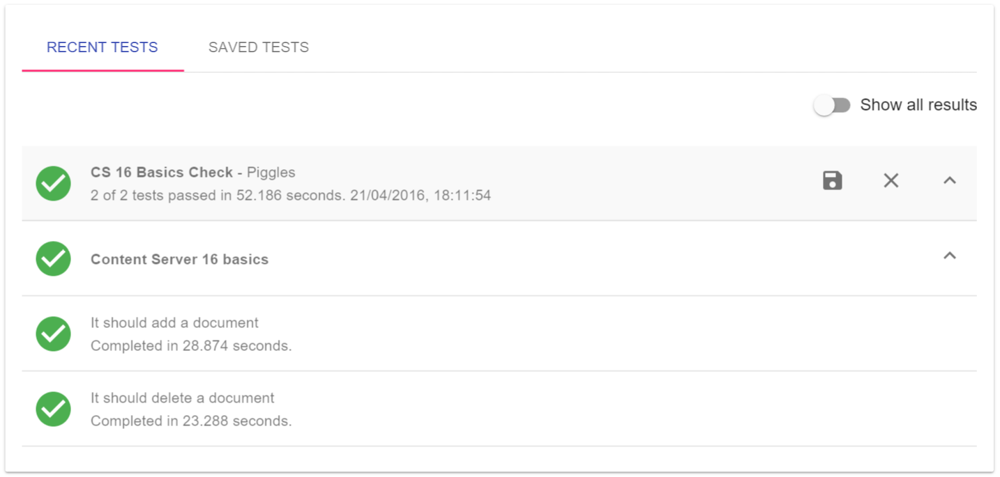

Recent tests

When your test has completed the results and timings will be added to the recent tests section. Here you can inspect the test, looking at reasons for test failures and the time taken to complete the test and each step in the test. When you have finished inspecting the test you can either save or delete the test by clicking on the Save test icon or the Delete test icon
To inspect the detail of the test click on the Expand row icon. If there are multiple levels of tests you can click the Expand row icon again to see these other levels. To hide the details click on the Collapse row icon.
Further details for errors are available by clicking on the Show stack trace icon.
When looking at the test details you can choose to show only the failed tests or all tests. To change between the two views click the Show failed results or Show all results switch at the top of the recent tests section.